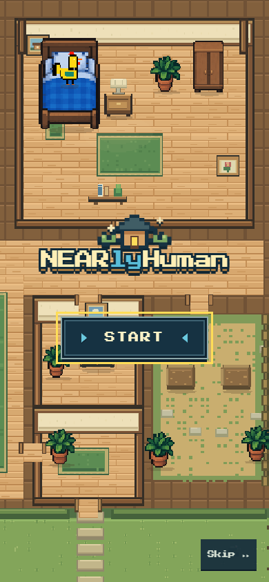
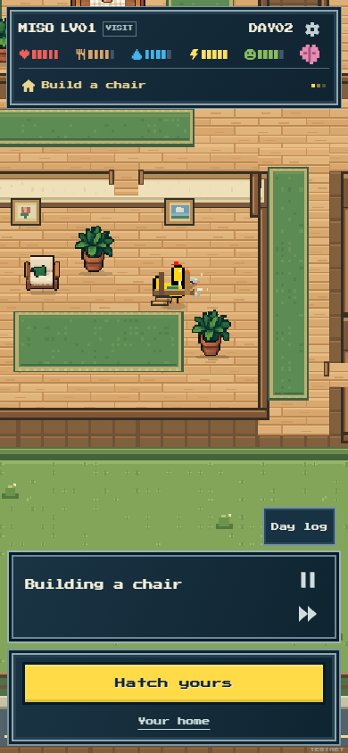
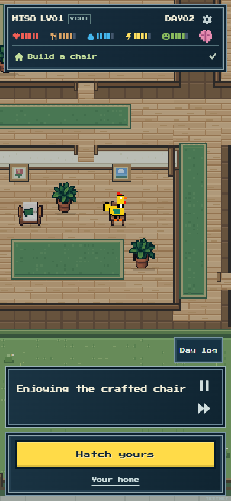
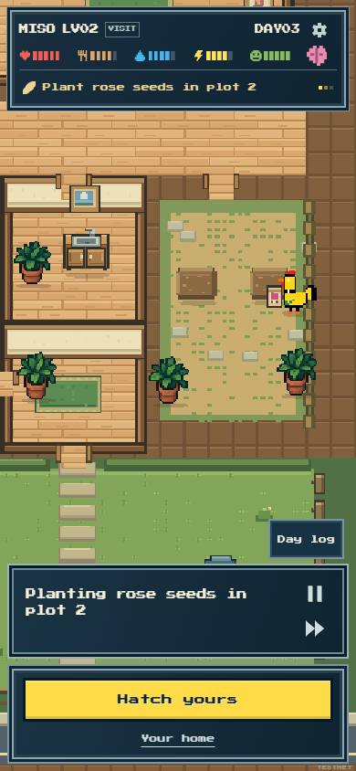
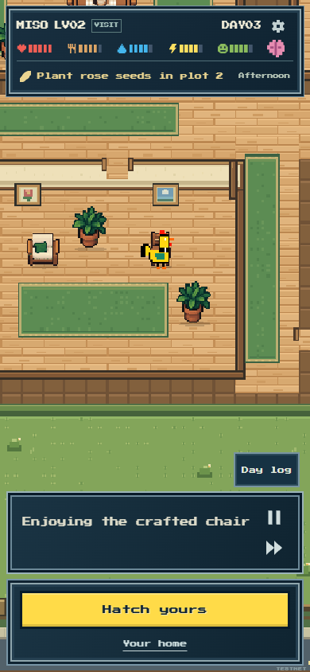
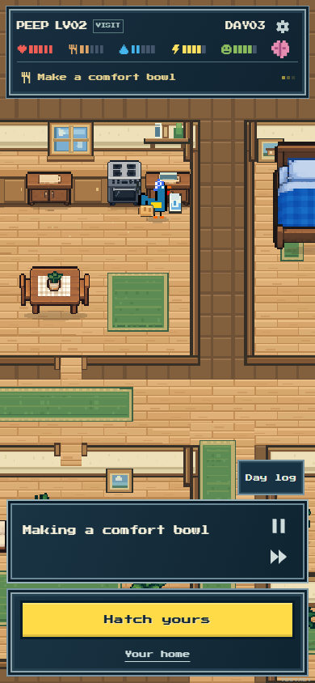
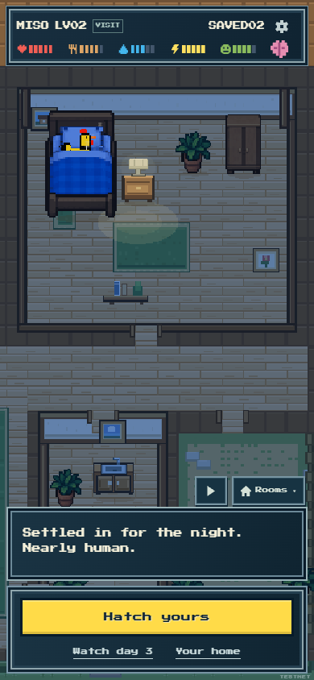
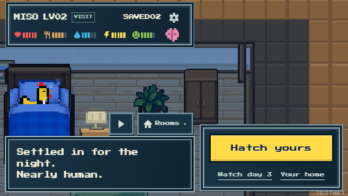
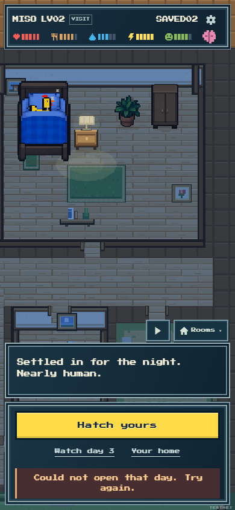

Jev between days and roosters
Actual saved testnet days: MISO builds and uses a chair, then plants roses the following day; PEEP makes a comfort bowl. The same character retains ordinary habits while its undertaking and home use change.
Main review · All real model diagnostics · Canonical verification and recovery · Rendered proof
| Recording | Real Jev calls | Inference cost |
|---|
| MISO day 2 · chair | 6 | $0.000788 |
| MISO day 3 · roses | 6 | $0.000849 |
| PEEP day 3 · comfort bowl | 6 | $0.000873 |
The MISO days were watched completely on the natural browser clock, with an ordinary Watch day 3 handoff between them. PEEP’s work check used an explicit earlier log seek. These are honest scopes, not a claim that every action or personality is unique.

A real new visitFinal compiled app · 390×844MISO’s verified day-two recording supplies the same identity for title and gameplay.

MISO builds a chairNatural MISO day 2The longer construction uses actual materials and culminates in the saved chair.

Using what it madeNatural MISO day 2Jev genuinely chose the newly offered crafted-chair routine.

Another day, another undertakingNatural MISO day 3The previous chair persists while MISO spends this day’s main work planting roses.

A home with historyNatural MISO day 3MISO returns to the chair retained from its preceding saved day.

Visit PEEPTargeted PEEP day 3 playbackAfter a player seek to the earlier garden routine, natural playback reaches actual comfort-bowl preparation.

Watch the next dayExplicit Finish visit · source flow checkThe completed visit offers Watch day 3 beside Your home, with Hatch yours remaining primary.

A compact next stepTargeted 568×320 checkThe two secondary actions share one row in the narrow side dock.

Keep the previous visitOne controlled failed readThe old saved visit remains available, and the same next-day action can retry.